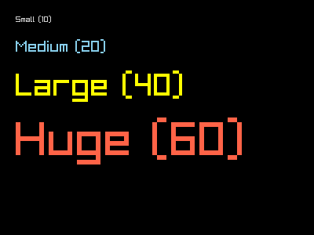
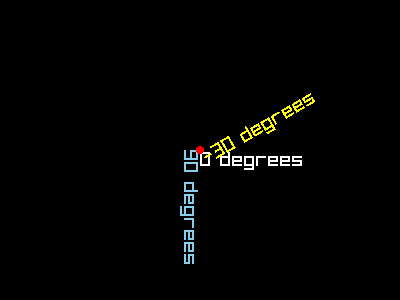
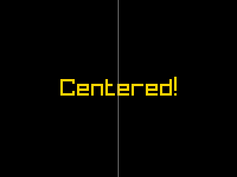

raylibr provides several functions for drawing text, from simple one-liners to fully controlled rendering with custom fonts, rotation, and spacing.
Simple text
draw_text() is the quickest way to put text on screen.
Pass the string, position, font size (integer), and color.
raylibr_screenshot(function() {
draw_text("Small (10)", 20L, 20L, 10L, "lightgray")
draw_text("Medium (20)", 20L, 50L, 20L, "skyblue")
draw_text("Large (40)", 20L, 90L, 40L, "yellow")
draw_text("Huge (60)", 20L, 150L, 60L, "tomato")
})
The default font is a built-in bitmap font included with Raylib.
Custom fonts
For higher quality text, load a TTF or OTF font with
load_font_ex():
font <- load_font_ex("path/to/font.ttf", 32L)
draw_text_ex(font, "Custom font!", c(100, 100), 32.0, 2.0, "white")
unload_font(font)draw_text_ex() takes a font object, text, position
(Vector2), font size (float), character spacing, and color.
Rotated text
draw_text_pro() adds rotation and an origin point. The
origin is relative to the top-left of the text and determines the pivot
for rotation.
raylibr_screenshot(function() {
font <- get_font_default()
draw_text_pro(font, "0 degrees", c(200, 150), c(0, 0), 0.0, 20.0, 2.0, as_color("white"))
draw_text_pro(font, "45 degrees", c(200, 150), c(0, 0), 45.0, 20.0, 2.0, as_color("lime"))
draw_text_pro(font, "90 degrees", c(200, 150), c(0, 0), 90.0, 20.0, 2.0, as_color("skyblue"))
draw_text_pro(font, "-30 degrees", c(200, 150), c(0, 0), -30.0, 20.0, 2.0, as_color("yellow"))
draw_circle(200L, 150L, 4.0, "red")
})
The red dot marks the shared origin point. Each string fans out from there at a different angle.
Measuring text
measure_text() returns the width of a string in pixels
at a given font size. Use it to center text:
raylibr_screenshot(function() {
text <- "Centered!"
size <- 40L
w <- measure_text(text, size)
x <- (400L - w) %/% 2L
draw_text(text, x, 130L, size, "gold")
draw_line(200L, 0L, 200L, 300L, "darkgray")
})
For custom fonts, use
measure_text_ex(font, text, font_size, spacing) which
returns a Vector2 with both width and height.
Line spacing
set_text_line_spacing() controls the vertical distance
between lines when drawing multi-line strings (strings containing
\n):
set_text_line_spacing(24L)
draw_text("Line one\nLine two\nLine three", 20L, 20L, 20L, "white")Text utilities
raylibr includes string manipulation functions:
text_to_upper("hello") # "HELLO"
text_to_lower("HELLO") # "hello"
text_to_snake("HelloWorld") # "hello_world"
text_to_pascal("hello_world") # "HelloWorld"
text_to_camel("hello_world") # "helloWorld"
text_subtext("Hello", 0L, 3L) # "Hel"
text_length("Hello") # 5